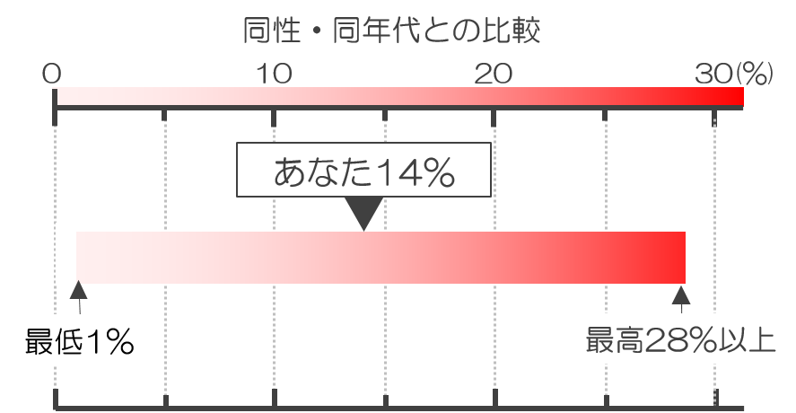

10年以内の発症率： 14%
あなたと同性・同年代の集団の発症率は
最低1％ ～ 最高28%以上です

確定的ではありませんが、発症率2％以上は冠動脈疾患発症の中リスク群、9％以上は高リスク群の可能性があります。該当する場合は、リスクに応じた一次予防のため、医師へ相談することをお勧めします。
今回使用した冠動脈疾患発症リスク（吹田スコア）は日本人を対象にした吹田研究のデータを元にしています
（Nishimura K. et al. Predicting coronary heart disease using risk factor categories for a Japanese urban population, and comparison with the Framingham risk score:
the suita study. J Atheroscler Thromb. 2014;21:784-98）。
糖尿病疾患の服薬治療をされている方、または血糖値が「糖尿病型」の方の冠動脈疾患発症リスクは計算できません。
日本糖尿病学会「糖尿病治療ガイド2018-2019」によると、
の場合、「糖尿病型」と判定されます。
これを以って診断とはなりませんが、糖尿病である可能性が高く、医師へのご相談をお勧めします。
以下の疾患を発症したことがある場合、発症リスクは計算できません。
・冠動脈疾患の既往のある方
・糖尿病
・慢性腎臓病
・非心原性脳梗塞
・末梢動脈疾患
今回使用した冠動脈疾患発症リスク（吹田スコア）は日本人を対象にした吹田研究のデータを元にしています
（Nishimura K. et al. Predicting coronary heart disease using risk factor categories for a Japanese urban population, and comparison with the Framingham risk score:
the suita study. J Atheroscler Thromb. 2014;21:784-98）。
冠動脈疾患の発症リスク計算に必要な項目が登録されていません。